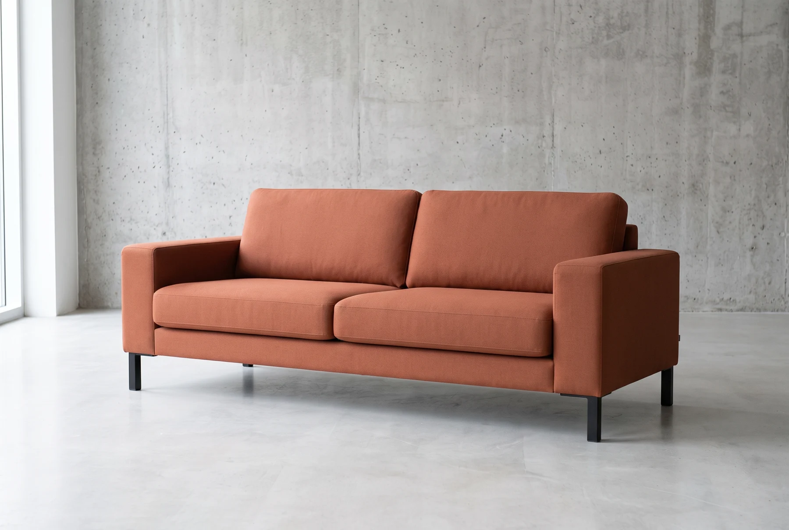

01 / ФАКТУРА
Тактильное тепло
Выразительное переплетение ткани. Мягкая фактура, которая делает индустриальный интерьер уютнее.
ОБЪЕКТ 01 / ДИВАН В СТИЛЕ ЛОФТ
Меньше лишнего. Больше жизни.
Ракурс: под углом
Лофт любит открытое пространство и вещи со своим голосом. ФОРМА / 01 поддерживает этот ритм: уверенный силуэт, низкая посадка и ничего случайного.
Мягкая обивка согревает строгость бетона и металла. Здесь можно собраться с друзьями, открыть книгу или просто никуда не спешить.
Выразительное переплетение ткани. Мягкая фактура, которая делает индустриальный интерьер уютнее.
Широкие подлокотники и глубокое сиденье. Пространство для любимой позы и долгих разговоров.
Тонкие опоры из тёмного металла подчёркивают геометрию дивана и оставляют воздух под ним.
03 / ВАШ ОТТЕНОК
Тёплый акцент или спокойная основа?
Выберите цвет, близкий вам.
Тёплый акцент для бетона, дерева и вечернего света.
У каждой комнаты свой характер.
Осталось найти в ней место для ФОРМЫ.
Рассмотрите в 3D или разместите в комнате на совместимом телефоне.